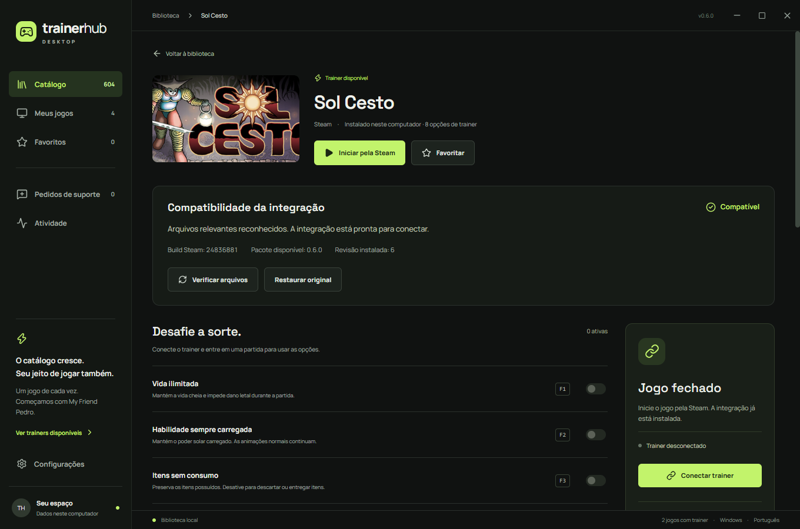

Seus jogos.
Suas regras.
Explore os cheats dos jogos compatíveis. Ajuste os atalhos e controle o trainer sem sair do jogo.
Explorar os cheatsO trainer acompanha você.
O ByteTrainer encontra os jogos instalados pela Steam e reúne os controles em um aplicativo para Windows.
- Atalhos por jogo
- Escolha as teclas de cada cheat e mantenha suas preferências entre sessões.
- Controles durante a partida
- Use a sobreposição no modo janela ou sem bordas. O atalho inicial é Alt + W.
- Sons configuráveis
- Ajuste o volume, escolha um estilo ou silencie os avisos ao alternar os cheats.

Integrações assinadas
O ByteTrainer verifica a assinatura dos pacotes antes de aplicar atualizações. Para atualizar manualmente, baixe o pacote na página do jogo e importe-o nas configurações do app.